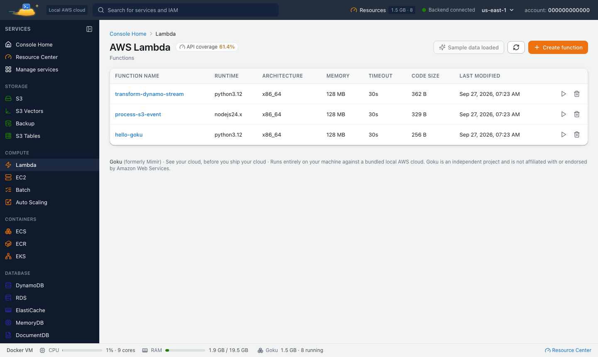

Deploying to AWS just to see whether a handler works is a slow loop. With Goku, a free local AWS emulator, Lambda functions run on your machine in real runtime containers, with logs, triggers, versions and aliases, and you can stop on a breakpoint in VS Code, IntelliJ, PyCharm or GoLand.
Goku was formerly called Mimir. Same product, new name: the image is now tanujsoni027/goku (it was tanujsoni027/mimir-aws) and the command is goku. See old and new names.
On this page: How it runs · Start · Create and invoke · Logs · Triggers · Hot reload · Debug · CI · FAQ
Each function runs in a Docker container built from the official AWS Lambda runtime image for its language, and gets its events through the Lambda Runtime API, which Goku serves. Goku supports every runtime AWS Lambda supports today, on arm64 and x86_64, and deprecated runtimes follow AWS's lifecycle dates:
| Language | Runtimes |
|---|---|
| Node.js | nodejs24.x, nodejs22.x (nodejs26.x in preview) |
| Python | python3.14 down to python3.10 (python3.15 in preview) |
| Java | java25, java21, java17, java11, java8.al2 |
| .NET | dotnet10, dotnet8 |
| Ruby | ruby4.0, ruby3.4, ruby3.3 |
| OS-only | provided.al2023, for Go and other compiled languages |
Also supported: container-image functions, versions and aliases, function URLs, provisioned concurrency, SnapStart, response streaming, and event source mappings for SQS, Kinesis and DynamoDB Streams.
Install the goku CLI (see Install), start Goku and point the AWS CLI at it. Lambda is one of the core services, so it is on from the first start:
$ goku start
eval "$(goku env)"
Goku needs access to the Docker socket to start runtime containers. The CLI and the docker run command on the install page both mount it.
Package a small Node.js handler and deploy it the same way you would on AWS:
$ cat > index.mjs << 'EOF'
export const handler = async (event) => {
console.log("Event:", JSON.stringify(event));
return { statusCode: 200, body: JSON.stringify({ hello: "world" }) };
};
EOF
zip function.zip index.mjs
aws lambda create-function \
--function-name my-function \
--runtime nodejs22.x \
--role arn:aws:iam::000000000000:role/lambda-role \
--handler index.handler \
--zip-file fileb://function.zip
Invoke it synchronously and read the result, or asynchronously with --invocation-type Event:
$ aws lambda invoke \
--function-name my-function \
--payload '{"key":"value"}' \
--cli-binary-format raw-in-base64-out \
response.json
cat response.json
aws lambda invoke \
--function-name my-function \
--invocation-type Event \
--payload '{"key":"value"}' \
--cli-binary-format raw-in-base64-out \
/dev/null
After a code change, zip it again and run aws lambda update-function-code --function-name my-function --zip-file fileb://function.zip. The next invocation runs the new code.
Every invocation writes the START, END and REPORT lines (duration, billed duration, memory used) and your function's output to CloudWatch Logs, in the log group /aws/lambda/my-function, as on AWS. Follow them from a terminal:
$ aws logs tail /aws/lambda/my-function --follow
goku logs --lambda my-function --follow
Or get the last 4 KB of an invocation's log in the response itself with --log-type Tail:
$ aws lambda invoke --function-name my-function \
--payload '{"key":"value"}' --cli-binary-format raw-in-base64-out \
--log-type Tail --query LogResult --output text response.json | base64 --decode
Functions can be triggered by real events, not only direct invokes. Connect an SQS queue with an event source mapping, and every message sent to the queue invokes the function:
$ aws sqs create-queue --queue-name orders
QUEUE_ARN=$(aws sqs get-queue-attributes \
--queue-url $AWS_ENDPOINT_URL/000000000000/orders \
--attribute-names QueueArn \
--query Attributes.QueueArn --output text)
aws lambda create-event-source-mapping \
--function-name my-function \
--event-source-arn $QUEUE_ARN \
--batch-size 10
S3 notifications, SNS, EventBridge rules, API Gateway routes, function URLs and Step Functions Task states invoke local functions too. In the console, each function's page has code, configuration, test events, logs, versions, aliases and triggers.

Two features shorten the edit-and-invoke loop:
--code S3Bucket=my-bucket,S3Key=function.zip). When you upload a new zip to that key, the next invocation runs it. You don't need to call update-function-code.-e GOKU_SERVICES_LAMBDA_HOT_RELOAD_ENABLED=true and create the function with --code S3Bucket=hot-reload,S3Key=/absolute/path/to/your/code. The folder is mounted into the runtime, so every invocation runs the files as they are on disk.Debug mode runs a function under its language's debugger and publishes the debugger port on your machine, on 127.0.0.1 in the range 5640–5659. Trigger the function any way you like and your IDE stops on the breakpoint with the real event in scope. While you're paused, the function timeout is raised to 15 minutes, so the invocation doesn't fail with Task timed out.
$ goku lambda debug my-function --wait --launch-json > .vscode/launch.json
aws lambda invoke --function-name my-function \
--payload '{"id": 42}' --cli-binary-format raw-in-base64-out \
--cli-read-timeout 0 out.json
The first command turns debug mode on and writes a VS Code launch configuration with the right port. It replaces an existing launch.json, so merge it by hand if you have one. --wait holds each invocation until a debugger is attached, and --cli-read-timeout 0 stops the AWS CLI from retrying while you step. You can also switch debug mode on in the function's Debug tab in the console, which shows ready-made launch configurations for VS Code and the JetBrains IDEs.
| Runtime | Debugger | Attach from |
|---|---|---|
| Node.js 18–24 | V8 inspector | VS Code, IntelliJ IDEA Ultimate / WebStorm (Attach to Node.js/Chrome) |
| Python 3.9–3.14 | debugpy, added by Goku | VS Code, PyCharm 2026.1+ (Attach to DAP) |
| Java 8–25 | JDWP | IntelliJ IDEA (Remote JVM Debug), VS Code |
| Ruby 3.2–3.4 | rdbg | VS Code (rdbg extension) |
Go on provided.al2023 | Delve | GoLand (Go Remote), VS Code |
Nothing is added to your deployment package. .NET, Rust and C++ custom runtimes and Go container images can't be debugged this way. For Go, debug the function as a zip function on provided.al2023. goku lambda debug my-function --off turns debug mode off.
The same image runs in CI. Turn persistence off for a throwaway environment, wait until the services your tests need are ready, then run the tests with the goku env variables. In a GitHub Actions step on ubuntu-latest:
- name: Lambda integration tests
run: |
curl -fsSL https://tanuj24.github.io/goku/install.sh | sh
docker run -d --name goku -p 4566:4566 -e GOKU_AUTO_PERSIST=off -e GOKU_SERVICES=all \
-v /var/run/docker.sock:/var/run/docker.sock tanujsoni027/goku:latest
goku ready --services lambda,sqs --wait 180
eval "$(goku env)" && npm testgoku ready exits with 0 once Goku and the listed services are ready, so it can follow docker run directly. To start every run from the same data, export a snapshot once and restore it in CI with goku snapshot import ci/baseline.tar.gz --restore.
Every runtime AWS Lambda supports today: Node.js, Python, Java, .NET, Ruby and provided.al2023, on arm64 and x86_64. Container-image functions work too.
Yes, for Node.js, Python, Java, Ruby and Go. Turn on debug mode with goku lambda debug or the console's Debug tab, then attach VS Code, IntelliJ IDEA, WebStorm, PyCharm or GoLand to the port it shows.
No. Goku runs the functions itself. You can create them with the AWS CLI, the SDKs, the console, Terraform, CDK or CloudFormation, SAM templates included.
The first invocation of a runtime pulls its AWS Lambda runtime image and starts a container. After that, warm containers are reused, as on AWS.
To CloudWatch Logs in /aws/lambda/<function-name>. Read them with aws logs tail, goku logs --lambda or the function's Logs tab in the console.